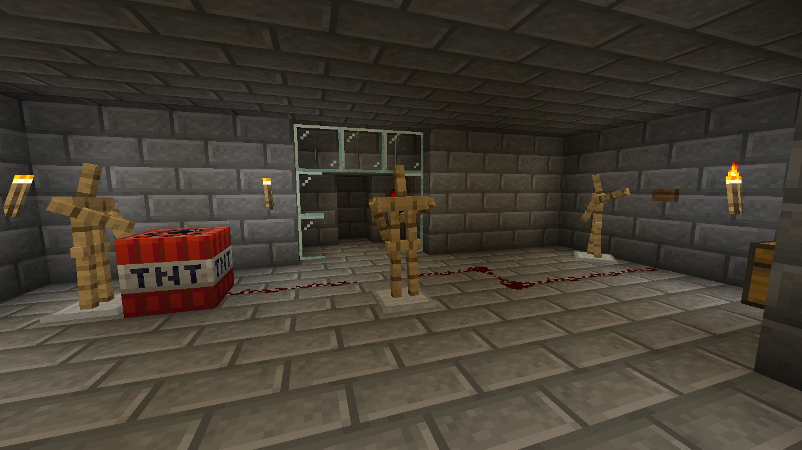

Living Armorstands
----------
A few people's armorstands near and within town, appear to of moved from the origonal positions they have been placed in. They appear to have had one specific intentional actions,
such as holding up banners, looting chests, breaking down doors, etc.
There is no evidence to who repositioned these armorstands, however they seem to have caused no major threat.

Armorstands spotted within "secret" room (2020-02-09)